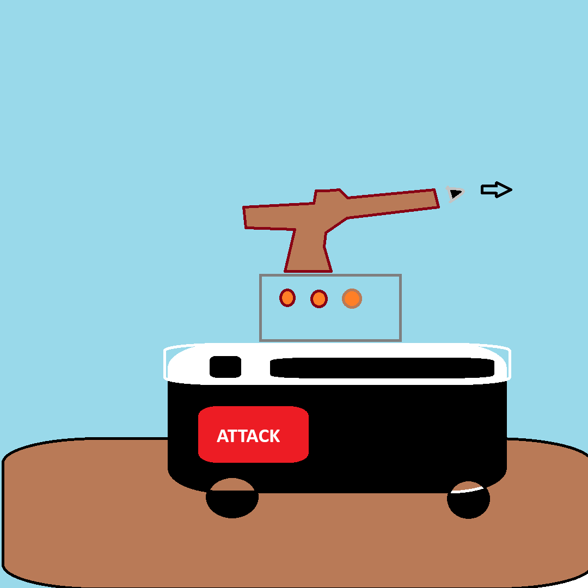

Introducing the Vodka and Chai Technologies Roomba with Turret: The Future of Smart Cleaning and Home Security
At Vodka and Chai Technologies, we believe that modern households deserve more than just convenience—they deserve protection. That’s why we’ve taken one of the most beloved smart home devices, the humble Roomba, and turned it into a groundbreaking dual-purpose machine: a state-of-the-art cleaning robot equipped with a security turret. No longer will you need to compromise between a tidy home and peace of mind. Our revolutionary Roomba does both, seamlessly integrating cleaning automation with active home defense.
Key Features
1. Autonomous Cleaning and Obstacle Detection
At its core, our Roomba is a highly efficient autonomous vacuum cleaner. With its advanced sensors, it detects dirt and dust, systematically covering every inch of your home’s floors. It easily maneuvers around obstacles such as furniture, pets, and stray objects, all while calculating the most efficient cleaning route. Equipped with the latest mapping technology, it learns the layout of your home and adjusts its cleaning patterns to ensure optimal coverage. Whether you have hardwood, carpet, or tile floors, the Vodka and Chai Roomba will adapt to each surface, leaving your home spotless.
2. Built-in Security Turret
What truly sets our Roomba apart is the integrated security turret. With the rising demand for home defense solutions, we’ve designed this feature to offer active protection while your Roomba is on patrol. The turret is discreetly built into the top of the device, featuring non-lethal deterrents such as a high-intensity strobe light, sound alarm, and optional pepper spray or airsoft pellets for non-invasive defense. These can be triggered remotely or automatically when the Roomba’s sensors detect motion or suspicious activity during its rounds.
3. High-Resolution 360° Camera
No security system is complete without proper surveillance. Our Roomba is equipped with a 360° high-definition camera that provides a comprehensive view of your surroundings. It continuously scans the room for any unusual activity, capturing video in real-time and storing it in the cloud for later review. Paired with its AI-driven motion detection system, the camera can alert you to potential threats while you’re away from home. The camera can also be manually controlled via the Vodka and Chai mobile app, allowing you to take direct command, view live feeds, or even communicate through its built-in speaker and microphone.
4. Smart Home Integration
The Vodka and Chai Roomba integrates seamlessly with your existing smart home ecosystem. Whether you use Amazon Alexa, Google Home, or Apple HomeKit, you can control your Roomba with simple voice commands. It can also be synced with other smart security systems, such as doorbell cameras and motion sensors, to create a comprehensive home defense network. When paired with smart locks, for instance, the Roomba can trigger a lockdown sequence in case of an emergency.
5. Remote Monitoring and Control
Through the Vodka and Chai mobile app, available on both iOS and Android, you have complete control over your Roomba from anywhere in the world. You can schedule cleanings, receive notifications of detected threats, and activate the security turret remotely. The app also allows for real-time monitoring through the Roomba’s camera, and it can send you video clips or alerts if it senses anything unusual while you’re away.
6. Advanced AI Threat Detection
The Roomba’s AI doesn’t just clean your home—it actively protects it. Using machine learning algorithms, it distinguishes between normal household activities, like pets moving or children playing, and potential threats. This ensures that the turret only activates when truly necessary, avoiding false alarms. The Roomba’s AI also learns from each event, improving its ability to recognize different types of movement and sound over time, making it smarter and more reliable the longer you use it.
7. Self-Defense Mechanisms
For those particularly concerned about home security, our Roomba’s turret can be upgraded with non-lethal deterrent options, such as airsoft pellets, pepper spray, or even a compact water cannon for environmental hazards. These options allow you to customize your Roomba’s response based on your unique security needs. The deterrents are designed to be safe but effective, ensuring they provide enough of a shock to deter any would-be intruders without causing harm.
8. Long-Lasting Battery Life
Our Roomba is powered by a high-capacity lithium-ion battery that allows it to clean and protect your home for extended periods without needing a recharge. On a single charge, the Roomba can cover up to 2,500 square feet, and when its battery runs low, it automatically returns to its docking station to recharge. The docking station itself can be equipped with a secondary security feature, adding another layer of protection to your home.
9. Silent Mode for Night Patrol
We understand that your security needs don’t end when the day does. Our Roomba comes with a Silent Mode, allowing it to patrol your home at night without disturbing your sleep. The turret remains active, and the camera continues to monitor the area, but the Roomba’s movement and cleaning functions become quieter, ensuring that it can operate discreetly in the background.
10. Durable, Modern Design
Crafted from high-grade, impact-resistant materials, the Vodka and Chai Roomba is built to last. Its sleek, modern design ensures that it fits effortlessly into any home décor. With its low-profile build, it can glide under most furniture and into tight spaces, making it as stylish as it is functional.
Conclusion: The Ultimate in Smart Home Protection and Cleaning
The Vodka and Chai Technologies Roomba with Turret is more than just a cleaning robot—it’s a game-changer in home security. With its unique combination of autonomous cleaning, advanced surveillance, and built-in defense mechanisms, it provides a level of convenience and protection that no other device can offer. Whether you’re at home or away, you can rest easy knowing that your Roomba is not only keeping your floors spotless but also standing guard, ready to protect your home and your loved ones. Welcome to the future of smart homes, where cleanliness and safety walk hand in hand.